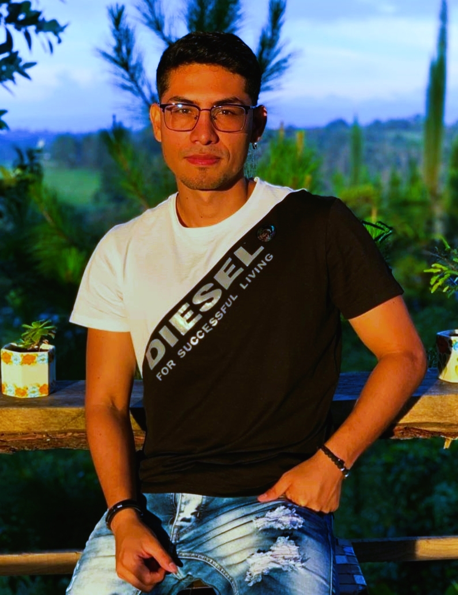

<div class="body-inicio vh-100">
    <div class="ctn-inicio  w-75 d-inline-block">
        <app-menu></app-menu>
        <div class="container">
            <div class="row">
                <div class="col">
                    
                </div>
                <div class="col ctn-txt-about-me">
                    <h3 class="title-me">Sobre mi</h3>
                    <p class="line-bottom"></p>
                    <p class="txt-description">
                    <ngx-emoji size:16 emoji=":man-raising-hand::skin-tone-3:" ></ngx-emoji>Soy Ingeniero de software con más de 3 años de experiencia en el desarrollo de aplicaciones web, especializado en tecnologías web frontend con Angular y programación reactiva con rxjs aplicando mejores prácticas de desarrollo. <br> <br>
                    <ngx-emoji size:16 emoji=":rocket::skin-tone-3:" ></ngx-emoji>A lo largo de mi trayectoria profesional he adquirido conocimientos en diversas tecnologías como Typescript, javascript, Angular, React, Angular Material, Boostrap y rxjs. <br> <br>
                    <ngx-emoji size:16 emoji=":books::skin-tone-3:" ></ngx-emoji>Cuento con un titulo profesional de ingeniero de sistemas informáticos de la universidad <strong> Autónoma del Cauca </strong> y certificaciones sobre desarrollo web y responsive design en <strong> Platzi </strong> y <strong> Udemy </strong>. <br>
                    <!-- <ngx-emoji size:16 emoji=":video_game::skin-tone-3:" ></ngx-emoji> Me siento muy afortunado porque amo mi profesión y siempre doy lo mejor de mi para seguir aprendiendo y mejorando. Cuando no estoy sentado en frente de la computadora estoy jugando futbol, leyendo o quizás siendo Rambo en warzone.  -->
                    </p>
                    
                </div>
            </div>
            
        </div>
    </div>
</div>
